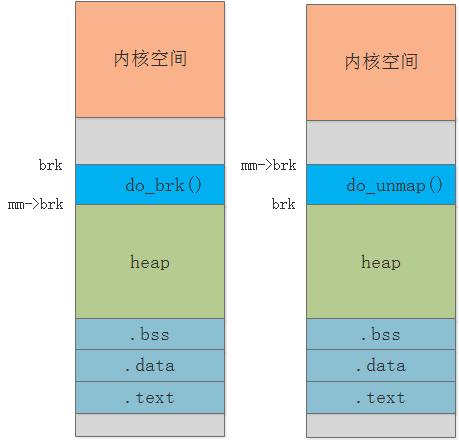

CH2-malloc
malloc
实际上，malloc并不是系统调用，而是C库里的函数，用于动态分配内存。malloc申请内存的时候，会有两种方式向操作系统申请堆内存。
**方式一：**通过==brk()系统调用==从堆分配内存
实现的方式很简单，就是通过brk()函数将「堆顶」指针向高地址移动，获得新的内存空间。如下图：

**方式二：**通过==mmap()系统调用==在文件映射区域分配内存

malloc()源码里默认定义了一个阈值：
- 如果用户分配的内存小于128KB,则通过brk()申请内存；
- 如果用户分配的内存大于128KB,则通过mmap()申请内存；
特点：
- 当malloc通过brk系统调用申请内存时，释放该内存后，操作系统不会立即回收这部分空间；相反，它会被保留在malloc管理的内存池中，供后续分配请求直接复用，从而减少系统调用开销。
- 当malloc通过mmap系统调用申请内存时，释放该内存后，系统会立即将其归还给操作系统，实现物理内存的即时释放，避免资源长期占用。
malloc()分配虚拟内存
malloc()分配的是虚拟内存。如果分配后的虚拟内存没有被访问的话，虚拟内存是不会映射到物理内存的，这样就不会占用物理内存了。只有在访问已分配的虚拟地址空间的时候，操作系统通过查找页表，发现虚拟内存对应的页没有在物理内存中，就会触发==缺页中断==，然后操作系统会建立虚拟内存和物理内存之间的映射关系。
brk()
brk 是 类 UNIX 操作系统（如 Linux、BSD 等）提供的系统调用，用于 进程地址空间的堆内存管理。堆（Heap）位于数据段（.data） 之后、栈（Stack） 之前，向上（高地址）生长。brk 通过调整 堆的顶部边界（break 指针） 来控制堆的大小。
brk的作用
核心是 修改进程堆的顶部地址（break 值），实现堆内存的 扩展或收缩：
- 扩展堆：若新的 break 值比当前大，内核会将堆向高地址扩展，分配新的内存区域（进程可直接使用，无需额外映射）。
- 收缩堆：若新的 break 值比当前小，尝试回收堆的高地址部分内存（实际中因内存分配器的管理逻辑，收缩可能受限，比如已分配的内存块未释放时无法回收）。
brk对应的映射类型
- 匿名映射：内存无对应的文件作为 “后盾”（即不关联磁盘文件）。
brk管理的堆内存 没有文件支持，属于 匿名映射。 - 私有映射：对内存的修改仅作用于当前进程（不会同步到其他进程或文件）。
brk的堆是 进程私有 的（每个进程的堆独立，修改不影响其他进程），因此属于 私有映射。
- 匿名映射：内存无对应的文件作为 “后盾”（即不关联磁盘文件）。
运行流程
我们需要分析brk系统调用，我们要从源码中进行分析：
mmap.c文件中：sys_brk函数（处理 brk 请求），负责接收用户空间的brk请求，初步校验后调用do_brk：1
2
3
4
5
6
7
8
9
10
11
12
13
14
15
16
17
18
19
20
21
22
23
24
25
26
27
28
29
30
31
32
33
34
35static int do_brk_flags(unsigned long addr, unsigned long request, unsigned long flags,
struct list_head *uf);
SYSCALL_DEFINE1(brk, unsigned long, brk) {
struct mm_struct *mm = current->mm; // 当前进程的内存描述符
unsigned long old_brk = mm->brk; // 旧堆顶地址
// ---------- 关键判断 1：堆顶不能小于起始地址 ----------
if (new_brk < mm->start_brk) {
return -EINVAL; // 非法：堆不能收缩到起始地址之前
}
// ---------- 堆收缩处理 ----------
if (brk <= mm->brk) { // 请求收缩堆
mm->brk = brk; // 立即更新堆顶指针
if (do_vmi_align_munmap(..., newbrk, oldbrk, ...))
goto out; // 释放物理内存并解除映射
}
// ---------- 堆扩展处理 ----------
// 检查新堆顶是否与栈或其他 VMA 冲突
next = vma_find(&vmi, newbrk + PAGE_SIZE + stack_guard_gap);
if (next && newbrk + PAGE_SIZE > vm_start_gap(next))
goto out; // 与现有 VMA 冲突或过于接近栈
// 创建新的 VMA 区域
if (do_brk_flags(&vmi, brkvma, oldbrk, newbrk - oldbrk, 0) < 0)
goto out;
// ---------- 调用 do_brk 处理实际调整 ----------
unsigned long ret = do_brk(new_brk);
if (ret < 0) {
return ret; // 调整失败（如地址冲突、内存不足）
}
mm->brk = ret; // 更新堆顶地址
return ret;
}堆边界定义
struct mm_struct中的start_brk（堆起始）和brk（当前堆顶）
本博客所有文章除特别声明外，均采用 CC BY-NC-SA 4.0 许可协议。转载请注明来源 Kevin's blogs！
相关推荐

2025-04-10
CH1-进程虚拟空间
代码学习链接： Linux 源代码 （v6.15.5） - Bootlin Elixir 交叉引用器 理论知识学习链接：小林coding | Java面试学习 进程虚拟内存空间为了防止多进程运行时造成的内存地址冲突，内核引入了虚拟内存地址，为每个进程提供了一个独立的虚拟内存空间，使得进程以为自己独占全部内存资源。 内核根据进程运行的过程中所需要不同种类的数据而为其开辟了对应的地址空间。分别为： 用于存放进程程序二进制文件中的机器指令的代码段。 用于存放程序二进制文件中定义的全局变量和静态变量的数据段和BSS段。 那些在代码中被我们指定了初始值的全局变量和静态变量在虚以内存空间中的存储区域我们叫做数据段。 那些没有指定初始值的全局变量和静态变量在虚以内存空间中的存储区域我们叫做BSS段。这些未初始化的全局变量被加载进内存之后会被初始化为0值。 用于在程序运行过程中动态申请内存的堆。这里的堆指的是OS堆并不是VM中的堆。 用于存放这些动态链接库中的代码段，数据段，BSS段，以及通过mmp系统调用映射的共享内存区，在虚拟内存空间的存储区域叫做文件映射与匿名映射区。 用于存放函...
2025-04-15
CH3-mmap详解与基于IMX6ULL嵌入式驱动开发实践
映射关系以下是针对 Linux 内存映射的四种组合及其应用场景的详细分析： 1. 文件共享映射（File Shared Mapping） 特点： 共享性：多个进程共享同一份物理内存，修改会立即反映到其他进程。 持久化：修改内容会写回磁盘文件（若文件支持）。 实现方式：通过 mmap 的 MAP_SHARED 标志实现。 内核机制：依赖文件系统的缓冲机制，所有修改需通过页缓存同步。 应用场景： 进程间通信（IPC）：如共享文件的读写操作。 数据库缓存：将数据库文件映射到内存，多个进程直接操作内存实现高效访问。 多进程日志记录：多个进程共享同一日志文件的映射区域，减少磁盘 I/O。 示例代码： 12int fd = open("shared_file", O_RDWR);void *addr = mmap(NULL, file_size, PROT_READ | PROT_WRITE, MAP_SHARED, fd, 0); 2. 文件私有映射（File Private Mapping） 特点： 独占性：每个进程拥有独立的私有副本，修改仅影响...
2025-04-20
CH4-内核虚拟空间学习与I.MX6ULL嵌入式驱动开发实践
虚拟内存内核空间 ==内核态虚拟内存空间是所有进程共享的，不同进程进入内核态之后看到的虚拟内存空间全部是一样的。== 线性映射区 lowmem在总共大小1G的内核虚拟内存空间中，位于最前边有一块896M大小的区域，我们称之为直接映射区或者线性映射区，地址范围为3G—–3G+896m。 之所以这块896M大小的区域称为直接映射区或者线性映射区，是因为这块连续的虚拟内存地址会映射到0-896M这块连续的物理内存上。 也就是说3G-3G+896m这块896M大小的虚拟内存会直接映射到0-896M这块896M大小的物理内存上，这块区域中的虚拟内存地址直接减去0xC0000000(3G)就得到了物理内存地址。所以我们称这块区域为直接映射区。直接映射区中的映射关系是一比一映射。映射关系是固定的不会改变。 原理线性映射区（Direct Mapping Area）是内核虚拟地址空间中一段固定偏移映射的区域，其核心原理是通过简单的数学关系建立虚拟地址与物理地址的直接对应： 经典通常是： 1虚拟地址 = 物理地址 + PAGE_OFFSET P...